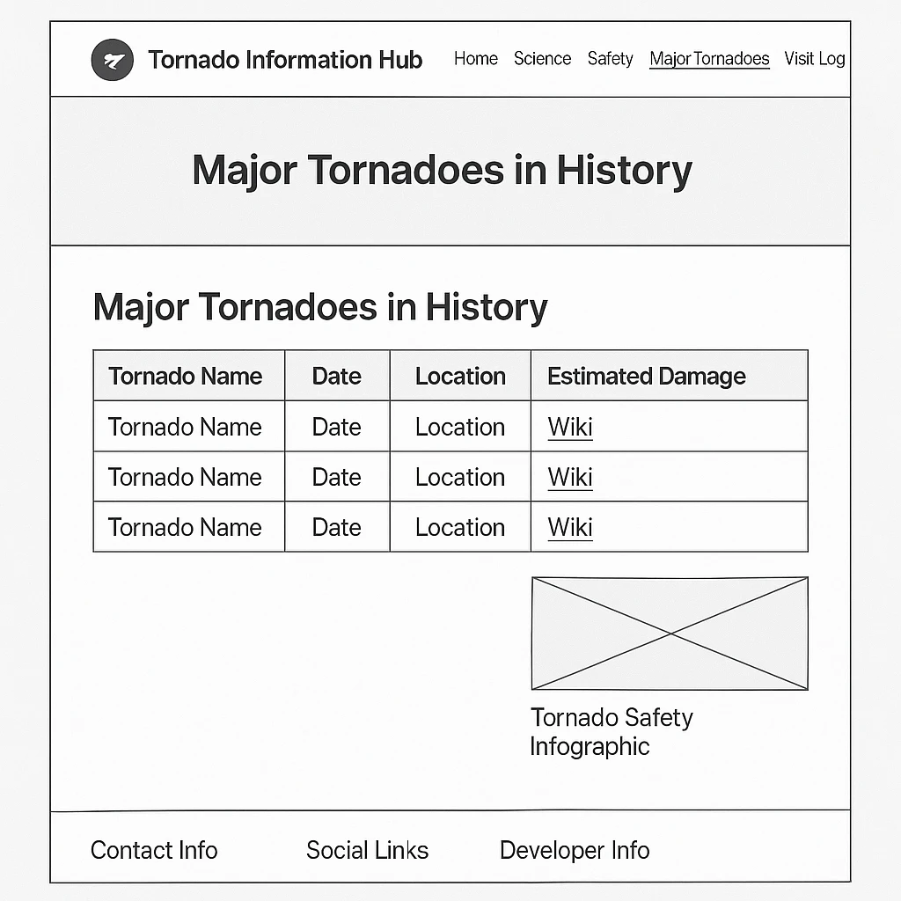

Tornado Information Hub Site Plan
Site Name
Tornado Information Hub
Site Purpose
The Tornado Information Hub aims to educate visitors about tornadoes, providing information on their science and mechanics, safety tips for households during tornado events, historical data on major tornadoes, and a platform for users to share their experiences through a visit log. The site serves as a comprehensive resource for understanding and preparing for tornadoes.
Target Audience
The primary audience includes:
- Demographics: General public interested in weather phenomena, including students, educators, families in tornado-prone areas, and tourists planning to visit such regions. Ages typically range from teens to adults (13-65+).
- Needs: Accurate information on tornado formation, safety measures to protect their households, historical data on significant tornado events, and a way to share personal experiences related to tornadoes.
- Motivations: Curiosity about tornado science, desire to stay safe during tornado events, interest in historical weather events, and community engagement through shared experiences.
Logo
Note: Replace the `src` path with the actual path to your logo image if it differs.
Color Scheme
The color scheme reflects the tornado theme, using stormy and natural tones while ensuring accessibility (WCAG 2.1 Level AA contrast requirements).
Primary Color (Stormy Gray)
#2E3A4A
Secondary Color (Tornado Funnel Gray)
#6B7280
Accent Color (Lightning Yellow)
#FBBF24
Background Color (Sky Blue)
#E6F0FA
Text Color (Near Black)
#1F2937
Typography
The site uses the Roboto font family, hosted locally to ensure consistent rendering and validation compliance.
- Font Family: Roboto (weights 400 and 700) with fallback to Arial, sans-serif.
- Usage:
- Body text, paragraphs, and form inputs: Roboto 400 (regular weight) for readability.
- Headings, navigation links, and emphasized text: Roboto 700 (bold weight) for visual hierarchy.
Wireframes
Home Page (index.html)
Science Page (science.html)
Safety Page (safety.html)
Major Tornadoes Page (major-tornadoes.html)

Visit Log Page (visit-log.html)